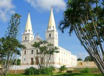

Museu Nilo Pereira
A história da povoação do Ceará Mirim está ligada aos índios Potiguares que viviam às margens do rio Pequeno depois chamado rio Ceará Mirim, que de maneira clandestina comercializavam o pau-brasil com os franceses e os espanhóis, recebendo em troca especiarias e, por último com os portugueses, seus colonizadores.
Praia de Jacumã
A história da povoação do Ceará Mirim está ligada aos índios Potiguares que viviam às margens do rio Pequeno depois chamado rio Ceará Mirim, que de maneira clandestina comercializavam o pau-brasil com os franceses e os espanhóis, recebendo em troca especiarias e, por último com os portugueses, seus colonizadores.
Praia de Porto Mirim
A história da povoação do Ceará Mirim está ligada aos índios Potiguares que viviam às margens do rio Pequeno depois chamado rio Ceará Mirim, que de maneira clandestina comercializavam o pau-brasil com os franceses e os espanhóis, recebendo em troca especiarias e, por último com os portugueses, seus colonizadores.
Praia de Muriú
A história da povoação do Ceará Mirim está ligada aos índios Potiguares que viviam às margens do rio Pequeno depois chamado rio Ceará Mirim, que de maneira clandestina comercializavam o pau-brasil com os franceses e os espanhóis, recebendo em troca especiarias e, por último com os portugueses, seus colonizadores.
Estação Ferroviária
A história da povoação do Ceará Mirim está ligada aos índios Potiguares que viviam às margens do rio Pequeno depois chamado rio Ceará Mirim, que de maneira clandestina comercializavam o pau-brasil com os franceses e os espanhóis, recebendo em troca especiarias e, por último com os portugueses, seus colonizadores.
Balaustrada
A história da povoação do Ceará Mirim está ligada aos índios Potiguares que viviam às margens do rio Pequeno depois chamado rio Ceará Mirim, que de maneira clandestina comercializavam o pau-brasil com os franceses e os espanhóis, recebendo em troca especiarias e, por último com os portugueses, seus colonizadores.
Igreja Matriz de Nossa Senhora da Conceição
A história da povoação do Ceará Mirim está ligada aos índios Potiguares que viviam às margens do rio Pequeno depois chamado rio Ceará Mirim, que de maneira clandestina comercializavam o pau-brasil com os franceses e os espanhóis, recebendo em troca especiarias e, por último com os portugueses, seus colonizadores.
Mercado Público
A história da povoação do Ceará Mirim está ligada aos índios Potiguares que viviam às margens do rio Pequeno depois chamado rio Ceará Mirim, que de maneira clandestina comercializavam o pau-brasil com os franceses e os espanhóis, recebendo em troca especiarias e, por último com os portugueses, seus colonizadores.
Thanks for clicking. That felt good.
Close